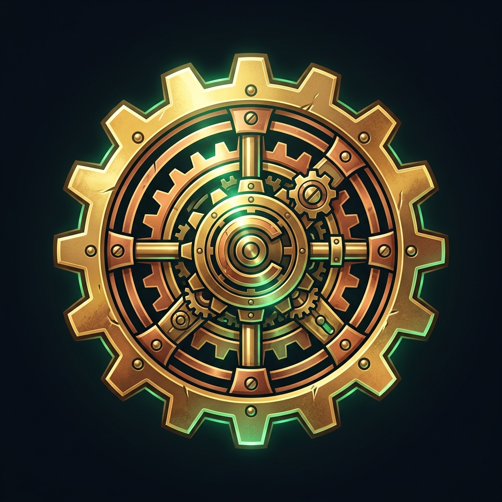
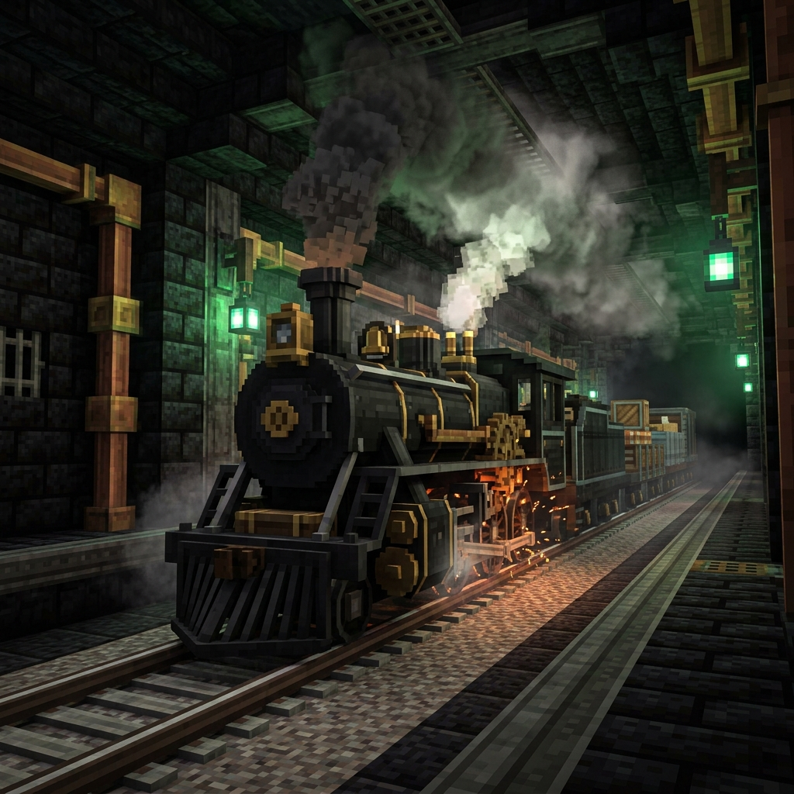
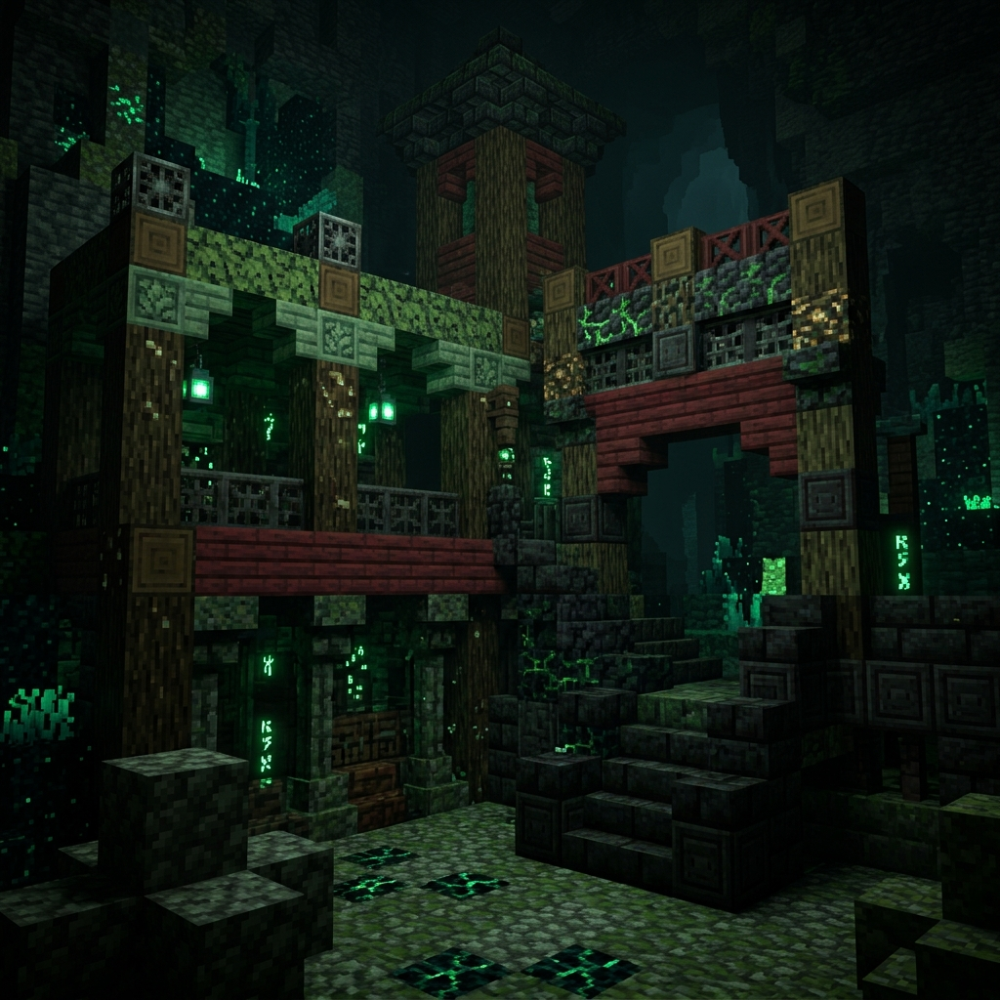
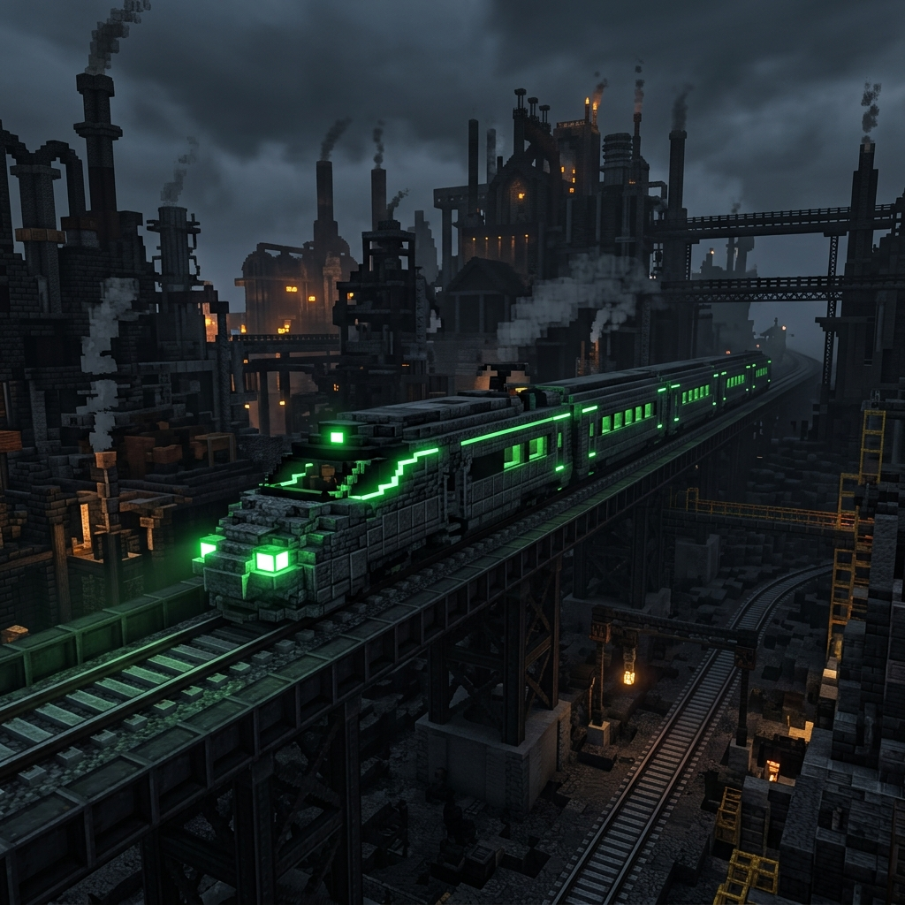
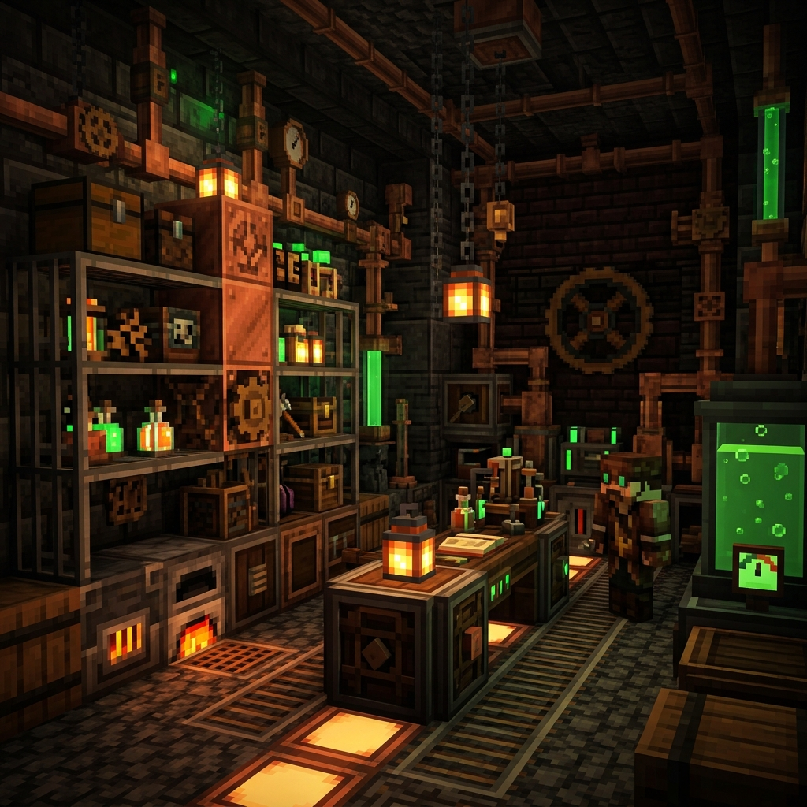
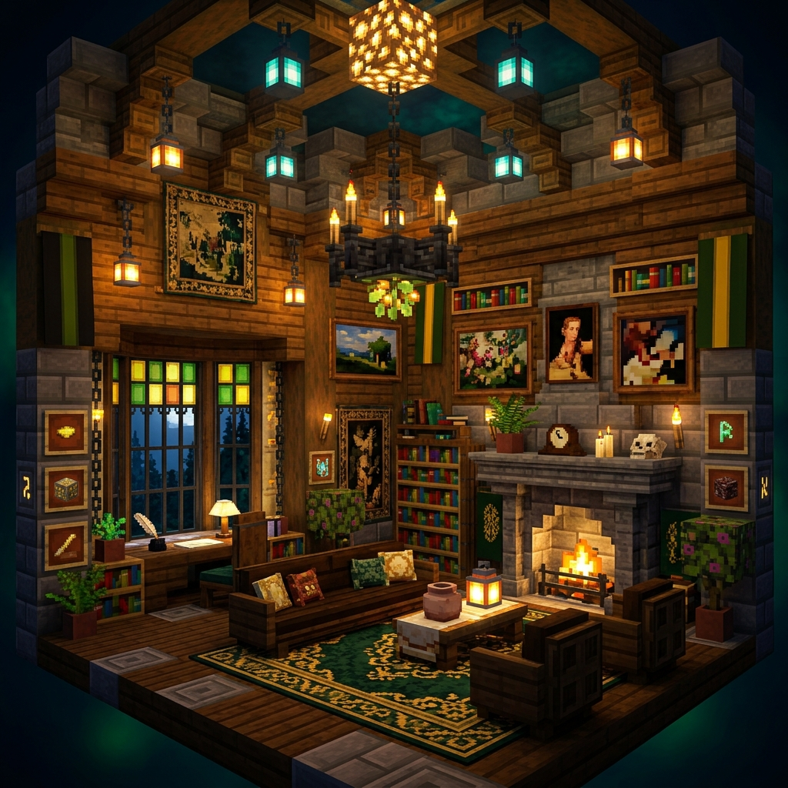

Javacreate
Server mode creative dengan teknologi Create Mod, sistem railway, dekorasi, dan komunitas yang solid. Bergabung dan bangun dunia impianmu!
Fitur Server
Semua yang kamu butuhkan untuk petualangan terbaik
Creative Mode
Bermain creative dengan teman-teman dalam dunia yang persisten dan menantang.
Create Mod
Bangun mesin, otomasi, dan sistem mekanik dengan Create Mod.
Railway System
Hubungkan base dengan sistem kereta api yang epik menggunakan Steam 'n' Rails.
Decoration
Hias base dengan ratusan blok dekoratif dari berbagai mod.
Community
Bergabung dengan komunitas kecil yang solid dan saling membantu.
Download Modpack
Download dan install modpack untuk bergabung ke server
Javacreate Modpack
0 downloads
Daftar Mod
Mod yang terinstall dalam modpack

Create
Core mod untuk mesin, otomasi, dan mekanik.

Steam 'n' Rails
Ekspansi kereta api dan lokomotif uap.

Copycats+
Blok yang bisa meniru tampilan blok lain.

Modern Train Parts
Parts kereta api modern dan futuristik.

Create Deco
Blok dekoratif industrial untuk Create.

Design n' Decor
Furniture dan dekorasi interior.
Cara Instalasi
Ikuti langkah-langkah berikut untuk bergabung ke server
Install Minecraft
Download dan install Minecraft Java Edition versi 1.20.1.
Install Forge
Download dan install Forge 47.4.10. Jika baru pertama kali, buka Minecraft dengan profil Forge terlebih dahulu, lalu tutup.
Extract ke Folder Mods
Buka Run (Win+R), ketik %appdata%, buka folder .minecraft/mods. Extract isi modpack ke folder tersebut.
Join Server
Buka Minecraft dengan profil Forge, tambahkan server dengan IP: minecraft.naufalrafa.my.id
Changelog
Riwayat perubahan modpack
- Ditambahkan Create Deco
- Ditambahkan Design n' Decor
- Ditambahkan Modern Train Parts
- Fix compatibility issues
- Performance optimization
- Initial Release
- Create Mod
- Steam 'n' Rails
- Copycats+
FAQ
Pertanyaan yang sering ditanyakan
Ya, server ini sepenuhnya gratis. Kamu hanya perlu memiliki Minecraft Java Edition.
Ya, server ini membutuhkan Minecraft Java Edition original untuk bisa bergabung.
Hapus semua file di folder mods, lalu download dan extract modpack versi terbaru dari website ini.
Minimal 4GB RAM dialokasikan untuk Minecraft. Disarankan 6-8GB untuk pengalaman terbaik.
Hubungi admin melalui Discord (FallFor4) atau WhatsApp (Naufal SIJA). Server biasanya akan kembali online dalam waktu singkat.